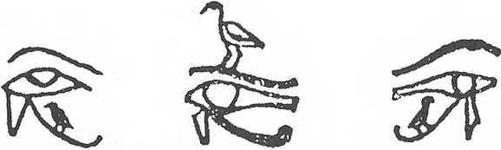

VIII. BAB
Amon Tapınağı'nda Meditasyon
Şimdi güneş daha yüksek ve terasımdan, altında onca firavun mezarı kazılı Batı Dağı’nı seyrediyorum. Soluk mavi gökyüzü altında daha koyu eflatun renginde ve daha esrarlı görünüyor. Üçgen yelkenleri gerilmiş felukalar* Nil üzerinde ağır ağır kayıyorlar. Nehir kıyısını takip eden koca firavun incirlerinin gölgelediği yolda, çanak-çömlek ve domates sandıkları yüklü Şubat ayında domates yetişir- cesur eşekler, rahat bir tırısla ilerliyorlar; sahipleri sırtlarına binmiş ve gözleri sineklerle dolu. Nil’in karşı kıyısına sıralı, özenle ekilmiş tarlalarda, başı sorguçlu çavuş kuşları yiyecek arıyorlar.
* İki direkli büyük sandal
Biraz daha uzakta, sarı kumun, ovanın yeşil renginin birden yerini aldığı alan, uçsuz bucaksız ölüler şehri. Nil’in öbür kıyısında, koca dağların bulunduğu yerde dikilen bu ölülerin Teb’i, canlıların dev Teb’i karşısında, bugün acı düşünceler veren yıkıntı bir toprak parçasından başka bir şey değil. Orada binlerce yıl boyunca, tanrıların eşiti olacak ölüleri yüceltmek için zamanında kurulmuş o süslü şehrin anısını insan boşyere arıyor.
Batı tepesinin egemen olduğu Biban el Molouk’un kaya döküntüleri altında veya güneş altında yanan, Dante’nin cehennemine benzer vadilerde hiç bulunmayacak olan o kutsal şehir ne oldu? Orada, çölün pudra kadar ince kumlarının parlattığı şekilsiz kalker direkler, dik yarlar, çökmüş koca kaya bloklarından başka bir şey görülmüyor. Bu Ölüler Vadisi insanların bütün boş iddialarına korkunç bir meydan okuma içinde sanki.
Bununla birlikte, tekrar ilkel kaosa dönmüş bu yerde, cehennem yalarmışçasına sizi yakan bu toprakta eskiden koç başlı sfenkslerin koruduğu yollarıyla; sonu gelmez nekropolün yeraltı saraylarına hizmet edenlere ve mumyalayıcı sanatçılara ayrılmış tapınaklarıyla; Ramesseum gibi aydınlatılmış cenaze tapınaklarıyla; XVIII. Hanedan firavunlarının yirmi metre yükseklikteki kırmızı granitten dev heykelleriyle; Amorfun olan öbür Teb’in göz alabildiğine uzanan, Nil’in öbür kıyısında vahalar ve tapınaklar arasındaki yaşayanların Teb’i karşısında, ölülerin parlak büyük şehri yükselip gelişiyordu.
Bu yıkılmış yerlerde binlerce sonsuzluk evi, resimli kapılarıyla; papirüs şeklindeki sütunlarıyla; Yüz Kapılı Tebdeki tapınak kapılarının önünde olduğu gibi dalgalanan bayraklarla süslü direkleriyle; mezarların yerini gösteren piramitleriyle; zaman zaman mezar kuyularından, ışık ve bitki dünyasını, canlıların bilmediği canlıların cennetini, Nil’in mavi sularının tatlılığını ve gün batımının ani güzelliğini yeniden bulmak üzere çıkan ölülerin zevki için yapılmış bahçeleriyle, dağlarda kat kat sıralanıyordu. Ölülerin bakımı ve anısına hasredilmiş bayram günleri gelince, beyaz keten elbiseler giymiş Tebliler Kutsal Batı Dağına hep birlikte tırmanıyor, tören masalarına yiyecekler koyuyor ve sevgili ölülerin ruhsal bedenleri önünde büyü formülleri okuyorlardı.

Kuş sekli altında ölünün ruhu, Horusun Gözü’ne, “Işığın Gözü’ne, eriyip bu yaratıcı ışıkla birleşmek ve kendisi de hayat kaynaklarının bir damlası olmak için, girip tırmanacaktır. METİN: “Geliyor, oujda’yı kucaklıyorum ve ışıkla sevineceğim.
Ben Horusun Gözü’nde olacak olanım ve bedenim Horusun Gözü’nün canlandırıcı kokusu ile temizlenecek. Horusun Gözü’nün kokusuyla ovulduktan sonra, Işık Saçan olacağım ve o zaman ölü Osirisler’in organlarını ve kemiklerini birleştirebileceğim.” (A) Kahire Müzesinde bulunan ve bir Amon rahibesinin mezarından alınmış bir figür; B) ve C) Torino Müzesindeki Nebt Habt Papirüsü’nden. Mayassis’ten alınmıştır.)
İsis ve Osiris’in babasının ölümünden sonra doğan oğlu Horus ile dünyanın şimdiki zamanları başlar ve firavunlar, birbiri ardından, Horusun hizmetkarları, tarih öncesi dönemlerin efsanevi kralları olurlar. Tebde Arkaik Çağa ait ilk sekiz tanrı ölür. Bu bölgede Ölüler onları yüceltirler. Medinet-Habou’nun büyülü ve canavarımsı yılanı Kem-Atef gibi.
Louqsor’un gündüzleri bembeyaz, akşamlan koyu eflatun sokak aralarında gözleri gülen yaşlı Koptlar, günümüzde de uluyan rüzgarda Nubye Amonu’nun kızgın ruhunun, tanrılar olan firavunların mezarlarına tecavüz edenleri lanetleyip inlediğini anlatırlar. Akşam üzerleri, azalmakta olan aydınlıklar içinde gökyüzü daha şeffaf görünürken koklanan mür ve diğer kokuların, Hathor'un terleri olduğunu söylerler. Güneşe ve ölülere, alt dünyalara girdikleri zaman yardım eden, Batı tanrıçası Hathordur. Bu Eski Mısırlıların gerçek torunları, Ölüler Tanrısı Osiris’in, onun bedeni olan nehrin suyunda her zaman mevcut ve etkin olduğunu, onun bedeninin ve bu suyun, her şeyin tohum ve ısınması olduğunu da söylerler. Tıpkı Nil’in mavisinin kıyılarında, sonsuzluğun geleceğinde, tarlalarının ürününü alacakları Semavi Nil’in yansıması olduğu gibi...
Ey Amon-Ra, bu tatlı ve sıcak Teb gecesinde seni içtenlikle çağırıyorum; çünkü sen, Babil’in Marduk’u gibi zalim ve egoist değilsin. Issız mabedinin ayla aydınlanmış uzun yollarında, her adımda senin varlığını hissettim. Benim çevremde asılsız bir şimdiki zamanın şekilleri kaybolurken, senin kutsal kentinin büyük yapıları tam anlamıyla gerçek miydiler?
Koç başlı Amon-Ra, seni canlıları kendilerinde oluşmuş bulunan her şeyin bundan böyle beden dışında veya dışta olanın beden içinde olacağı bir evrene çekecek korkunç kuvvetlerin çağrılacağı gibi davet ettim. Belki de zamanların sonsuzluğunun her ölüye sokuluşu böyledir...
Seni andım ve çağırdım, ey Teb tanrısı; ve tersine bir dünyada Gecenin Oniki Kapısına doğru indim. AmonRa, tanrılarla dolu karanlıklarda kimdin? Değil mi ki ölüler tanrı oluyor? Galaksiler yok olana kadar ölüler alemindeki ateş gölleri yansın, Apophis* bu alemi kıvrımlarıyla doldursun, her gece oniki bölgede, ellerinde tuttukları yılanların yardımıyla ölülerin çektiği Güneş Kayıkları süzülsün!
*Hemen hemen bütün eski uygarlıklarda sembol olan dev bir yılan.
Bu Mısır gecesinde, hatırladığım firavunun duası ne kadar güzel ve saf; sana doğru geliyor, tapınağın iç bölümünü ateşle kutsuyor, alevlerin üzerine tütsü tanecikleri serpiyor, heykelinin önünde secdeye kapanıyor, mezet boyasını, alkışlar kokusunu, safi yağını, Lübnan ve Libya kokularını takdim ediyordu. Seni yüceltiyordu; çünkü insanlara, ölüm olan öbür dünya için ruhsal bedenlerini ve gereksinmeleri olan yiyecekleri sen verdin.
İSMİNİ KUTLUYORDU; çünkü göğü sen yarattın, insanların yararlandığı zevk ve aşka, Hou ve Sa’ya sahip oldun; gökte kapalı olanları, kıvılcımlı parlaklığının bağrında yüzlerini parlatanları ne sınırı ne de başlangıcı olan kendinde birleştirdin... İnsanlarca yıkılmış ıssız tapınağında bu gece seni çağırıyorum; çünkü sen ilk Noundan, ilkel kaostan kendini kurtaran, “kalbi hiç yorulmayan’sın; varlıkların yaratıcısısın.
Senin tapınağındadır ki, ey Amon-Ra, önümde Gecenin Oniki Kapısının açıldığını gördüğümü sandım. Ey mezarlarımızı zorlayıp altınlarımızı, yiyeceklerimizi, papirüslerimizi, kuşruhlarımızı, keten sargılarımızı soyanlardan çılgına dönmüş ölüler, yaşamınızı hatırlayınız! Gün ışığından büyülü heykelciklerinizin eşliğinde nasıl çıktınız? Işıklı “kozmik yumurtayı,” sırtlan nefesinden daha pis kokan cehennemin çeşitli katlarındaki ruhları nerede gördünüz? Salonlara girerek ışık veren asaların önünde iç organlarınızı selamladınız mı? Yolunuzun üzerinden, aşağıda veya yukarıda bulunuşlarına göre, oniki burç veya pisliklerle beslenen timsah ağızlı sekiz şeytanı kovmasını bildiniz mi? Tuzaklardan, iplerden, ısırıklardan, ağlardan, tırmıklardan, başıboş dolaşan ve dehşet salan isimsiz şeytanların öldürücü nefeslerinden kaçınmayı bildiniz mi? Yaşamış olduğunuz zaman sizde olan her şey, örneğin iç organlarınız ve ruhunuz binlerce yıldan beri artık sizde değil. Gökyüzünde boynunuzun dört omurunu düzeltecek, firavun incirleri altında Anubis Tapınağının kutsal ekmeklerinden yiyecek, milyonlarca yıl için saflaşacak, Ptaah’ın göğüne doğru baloncuklar gibi yükselen gezegenleri ve gökteki Abydos’u, uzayın dört bölgesinin dört direğini, bedensiz ruhların plazmasını, parıl parıl “ka”ları ve “Kamış Tarlası’nın, Sekht-İalou’nun ondört adasını seyredeceksiniz...
Gece çöktü... Beyaz evlerinin eşiğine oturmuş ihtiyarlar görüşüyor; uzun beyaz entarileri (djellaba) içinde çocukların gözleri gülüyor, birbirlerinin kollarını tutuyorlar. Nil kıyısındaki bu Mısır akşamları, sokak aralarında hâlâ devam eden bir sera sıcaklığına karşın, ne kadar da tatlı. Yaşama sevinci burada daha berrak, daha anlamlı. Ayaklarımın altında, gece güneşinin büyük olayı için ölüler dünyası uyanırken, tanrı-nehrin derinliklerinden, Krallar Vadisinden dönüşte öbür sahilde görülebilen Louqsor’unkine benzer tapınaklar ortaya çıkıyor.
Gece çöktü... Mavi ve beyaz maşlahlar giymiş fellah grupları karşı karşıya geliyor, birbirlerine sesleniyorlar; İslam evliyalarının türbelerine adaklarını koyacaklar; dükkancılar küçük tezgahlarında insanların düş güçlerini besleyen baharat ve altınlarıyla kapanıyorlar. Göz alıcı renklerde etekleriyle, hoşa gitmek için sürme çektikleri güzel gözlerini süzen neşeli fellah kadınlarının geçtiğini görüyorum. Biliyorum ki yarın bayram günü; vücutlarına lavanta ve rezene kokuları sürecekler; gerdanları mücevher ve altın para ile dolu olacak. Her ne kadar aldırmaz karakterliyseler de, kötü gözlerden sakınmak için evlerinin kapısının önüne bir çivi parçası koyarlar. Firavunlar döneminde olduğu gibi, Nil balıklarının tuzlamasını ve kaz kavurmasını çömleklere yerleştirmesini bilirler.
Güler yüzlü ve geveze kız çocukları, Levanten* dükkancıya köylülerin sebze bahçelerine döktükleri güvercin gübresi dolu sepetler götürürler. Ateşli hastalara biraz canlanmaları için verilen o ünlü Coptos şarabından, burada hâlâ bulmak mümkündür. Eskiden bu Horus yıldızı şarapları o kadar ünlüydü ki yapım yılı kabın karnına işaretlenmeden hiçbir küp ihraç edilemezdi.
* Orta Doğu'da yerleşmiş Yunanlı, Ermeni, İtalyan, Fransız vs.lerin karma ailelerinden Hıristiyan halka verilen isim.
Gece çöktü... Çocukların berrak seslerini, ovadaki kurnaz çavuş kuşlarının son ötüşlerini dinliyorum. Uzakta dervişlerin okuduğu ezanlar, cinlerin kederlenmelerini hatırlatıyor. Karnak kobrası, sahibinin fotoğraf makineleri önünde hünerlerini gösterdiği bu ünlü evcil kobra, günün sıcaklığını koruyan bir duvar oyuğunda çöreklenmiş olmalıdır. Birazdan Ay, Batı Dağının tepesinden görünecek; cenaze tapınaklarının avlularını koruyan dev Osiris heykellerini, kutsal gölleri, göz alabildiğine uzanan harabelerin sonsuzluğunu aydınlatacak. Bu harabeler sayesinde, Yüz Kapılı Teb’in nasıl olduğunu ve Mısır uygarlığının parlaklığını hayal edebiliyoruz.
Onca sırrı bağrında taşıyan toprağın derinliklerinde, mezarları daha üç bin yıl öncesinde soyulmuş nekropollerin diplerindeki duvar resimlerinden, Ölüler Kitabında tanımlanan öbür dünyanın nasıl bir yer olduğunu azar azar keşfediyoruz. Bu, bizim için hasisçe ayrılmış yaşam süresinden kaçabilmemiz, onu bir an için silmemiz mümkün mü? Onu eski zamanlarla değiştirebilir miyiz? Ey koç başlı, çömlekçi çarkında insan varlıklarına şekil veren Khnoum, Memphis’in Ptaah’ı gibi, üç bin yıl geriye bir adım atılabilir mi?
Bu adımı ben attım. O akşam, tanrının halkıyla birlikte Teb tapınaklarını ziyaret ettiği Yıllık Alay günü, Amon-Ra’nın kutsal kayığının zamanında bağlamaya geldiği eski rıhtım boyunca yürüyordum. Amon mabedinin giriş kapısının önünü gözleyen kırk sfenksin önünden geçtim. Gerçekten, tavanı sütunlarla tutturulmuş salonun döşeme taşlan üzerinde adımlarımın ne acayip bir sesi vardı! Bize, bir kitabın sayfalarında olduğu gibi, firavunların ve Mısır tanrılarının çok uzun tarihini, mutlu zaferleri, “sulh ve kardeşlik antlaşmaları” ile sözleşmeleri anlatan Assouan granitinden yüz otuz sütun arasında takım yıldızların parladığı tavanı gördüm. Ay ışığı altında, tanrıların doğru buldukları ölüler önünde açıldığı gibi, yalnız benim için gökyüzü kapılarının açılacağını sandım.
Ama tapınağın döşeme taşlan üzerinde inisiyelerin adımları ne iz ne de tozlarının tozunu bırakmıştı... Ancak gökyüzü gezegenleri, yıldızları, galaksileri, patlamış güneşlerin ani parıltısı içinde yok olmakta olan ölü dünyalarıyla, evet, yalnız gökyüzü, dört bin yıl önce olduğu gibiydi... Ve bu gökyüzü, her biri ellişer bin yıl saltanat süren firavunların masal döneminde yaşayanların belki de korktukları, aynı gökyüzüydü!
Tepelikli çavuş kuşlan uzun zamandan beri tapmak harabelerinde uyudular ve palmiyeler artık hareketsiz. Karnak tapınağının yedinci kapısı önündeki her biri 350 ton ağırlığında ve elli metre boyundaki dikilitaşlar nerede?
Tapmaklara “gökyüzü durdukça durmaları ve otuz yüzyıl sonra gelecek olanlar tarafından görülebilmeleri” için yerleştirilmiş, kralların anıt şekilleri nerede? Ramesseum’un herbiri 1,000 ton ağırlığındaki dev heykelleri nerede?
Ondört metre yükseklikte, altın ve çini hamuru ile kaplanmış, eski Teb’in kutsal duvarlarının eski kapılarını yeniden yapmak isteyen Ptoleme’lerin yüz kapısı nerde?
Ouserhat Kayığı, altmış kürekçinin hareket ettirdiği, teknesi altın kaplı, kabartmalarla süslü Amon’un kayığı ne oldu?
“Vadi Bayramı” günü nehrin kıyılarına toplanmış halk, Amon’u altın ve gümüş karışımı, amber renkli kasrında ve geminin önünde, üç tanrıdan ibaret mürettebatıyla giden mistik kayıkla Nil boyunca inerken gördüğünde, gemiyi alkışlıyordu. O üç tanrıdan Anubis başta duruyordu; çünkü o, “Güney Yollarının Açıcısı” idi; kilden insan şekillerini çıkaran ve her günkü güneşin içini aydınlattığı dünya yumurtasını biçimlendiren Khnoum; Horus; fakat evrenin yan sahibi olan Horus değil, piramitlerin programlayıcısı tanrıların Horus’u.
Evet, Vadinin bu yıllık Bayramında Mısır’ın tarih öncesi en eski iki başkentinin anısını canlandırmak için çakal ve atmaca maskeleri takmış otuz rahibi ile Ouserhat Kayığı ne oldu?
Tanrıların ve tanrıların oğulları olan firavunların yaşamını tasvir eden kabartmalarla süslü kaymak taşından, küçük tapmaklar, Nil Vadisinin sekizde birine sahip ve doğumlarından önce firavunların kaderini tespit eden Amon’un 5,200 heykeli ne oldu?
“Sesi doğru” IV. Ramses, sana Ölüler Kitabında öğretildiği gibi, bu tapmağa sembolik güneş ve yılanla taçlanmış Horus önünde tanrıça Ament’in bir heykelini hediye eden ve karşılık olarak Ankh, yaşam işareti, sırların anahtarını, tanrıların ruhunun ölümsüz doğasına denk gelen, yuvarlağıyla, ne gözüken başlangıç ne de sonu olan yuvarlak başlı haçı, inisiyenin transının son kademesini simgeleyen haçı alan sen, neredesin?
Fakat karanlıkların kuşu haykırdı ve firavunun veya ruhsal bedeninin hayali, mimari yapısı altın oran kanununa uyan tapınağın şeffaf duvarlarından geçerek kayboldu. Cenaze tapınaklarının yüksek ve canlı sütunları, açık veya kapalı, mimar tarafından hareketi tespit etmek için düşünülmüş, şahit olduğumuz olağanüstü olayların anısını bir iz olarak saklayabildiniz mi?
Osiris’in ölüm dramı kutlandığında ve yeniden dirilişinin çeşitliliği gölgeler arasında tekrar söylendiğinde yabancılara yasak olan yeraltı tapınaklarında (crypte) hangi sırlar açıklandı?
Kutsal Abydos gecesinde, kutsal Karnak gecesinde ve zamanların gecesinde, şarkı söyleyen Amon rahiplerini işitiyorum ve elleri çiçeklerle dolu bir halde tapınan kalabalıkların, tapmakların teraslarına çıktıklarını görüyorum...
Denderah teraslarında müzik zaman zaman çarpıcıdır; malakitten (yeşil damarlı kıymetli bakır taşı) mücevherlerle süslenmiş ve keten giymiş bu dünyanın ve öbür dünyanın tanrısal tapınıcı kadınları, hayvan yüzlü tanrıların odalıkları, zevk alıp coşarlar; ey Amon, şerefine yapılan kutsal danslardan sonra fuhuş yapacaklar, kötü tesirleri kovan büyülü bir alet olan sistrelerini çalarak, onları yakalayıp birleşmen için, ey Teb’in Amon’u, senin evine gelecekler ve göğe yükseldikleri zaman çünkü Mısır’da ölünmez; göğe çıkılır karıların, ey Amon, bütün ölülere vaad edilmiş olduğu gibi, sonu gelmez evrende güneş kursları olacaklardır.
“Gökyüzünün Kapılarının Açıcıları” olan büyük rahipler, Osiris’in önünde “Tartılmış Sözün Gecesi’nden sonra adlandırılmış, temize çıkan ölülerin göğünde, onların bitmez tükenmez bir parıltıyla parladıklarını göreceklerdir. Onları daha iyi görmek için yedi kademeyi ağır ağır tırmanacaklardır. Bu yedi kat, kendisine yükselmenin yolu açıklanmışlar için, yaratılmış kainattan bilinmez ebediyete, bozulmaz ölülerin önüne açılan kapılara, Yüksek Kademelerin Işık Saçan Ruhları önüne, yıkım şekilleri ve yeniden doğuş şekilleri önüne, zamanların başından beri Ölüler Kitabında yazıldığı gibi direkleri üzerinde oturan Ra'nın önüne gider.
Çünkü her şey, zamanın başlangıcından beri “Ölüler Kitabı’nda yazılıdır...
Zamanın başlangıcından beri...